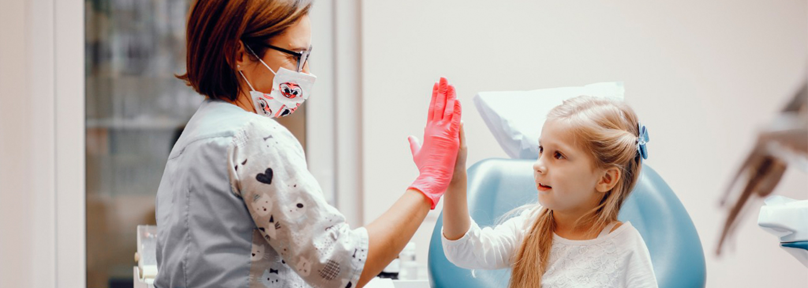

Sobre a Odontopediatria
É a especialidade voltada para o atendimento odontológico de bebês e crianças. Desse modo, atua no diagnóstico, tratamento e também na prevenção de problemas de saúde bucal desse público.
Assim como nas outras áreas da saúde, há dentistas que se especializam no tratamento de crianças. É por isso que um dentista de crianças também conhecido como odontopediatra é uma boa escolha para as necessidades de saúde bucal de seu filho.

Quanto custa a consulta? O preço varia de acordo com o lugar, com o especialista que você irá visitar e com os procedimentos que serão realizados. Mas os preços giram em torno de R$ 100,00. É importante saber que algumas consultas podem ser cobertas parcialmente ou totalmente pelo plano odontológico.
Uma consulta pode durar meia hora ou muito mais. Isso porque o tempo de atendimento vai depender de cada caso. Durante o tempo de atendimento, todo o processo de esperar para ser recebido pelo dentista, realizar procedimentos e exames odontológicos são contados.
No primeiro encontro da criança e o dentista, são feitas avaliações de como está ocorrendo a amamentação, a introdução alimentar, a higienização da cavidade oral, o aparecimento dos dentinhos de leite, sugestão de escovas, modos de escovação, uso de pastas de dente que devem ser utilizadas nos primeiros anos de vida.